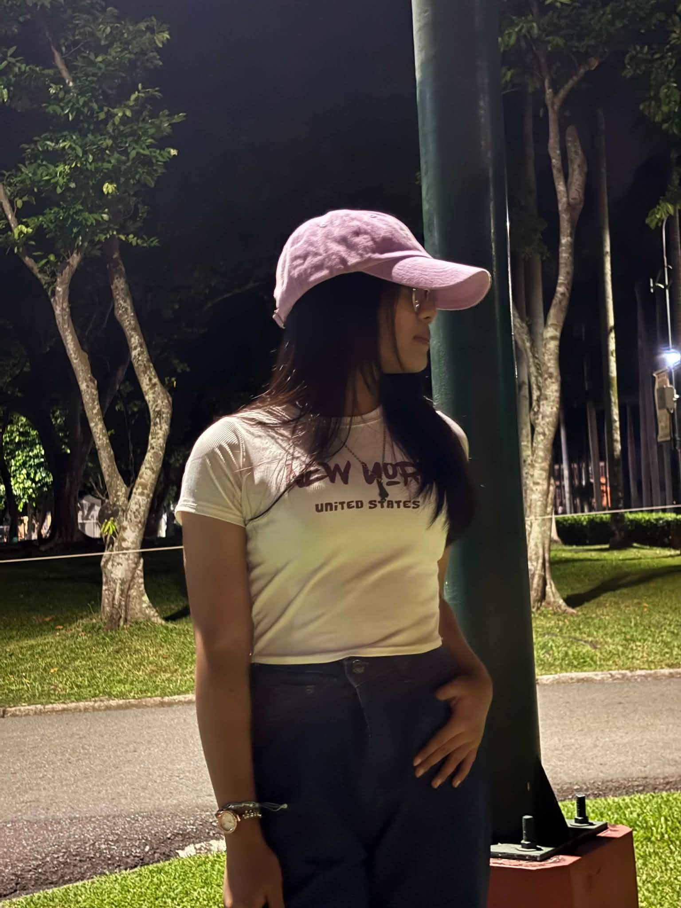

GET TO KNOW THE PERSON BEHIND THE WEBSITE ♡
About Me
A little story about who I am and the journey that makes me, me.

Hi, I'm Mariel!
But you can call me Marie ♡
♡ Who I Am
Hello! I'm Mariel G. Sixto, but you can call me Marie. I am currently a first-year college student taking up Computer Science. Honestly, Computer Science wasn't really the course I had originally imagined for myself. Back then, I wasn't sure what I truly wanted to pursue in college or which field suited my interests. But here I am now, studying BS Computer Science, learning new things, and discovering more about myself along the way.
I love learning new things, exploring my interests, and creating memorable experiences. I consider myself someone who is still growing, discovering new things, and learning more about life. I may not have everything figured out yet, but I believe that every step I take is part of finding my own path.
♡ Hometown
I am from Los Baños, Laguna, Philippines. It is the place where I grew up and where many of my childhood memories and experiences began. It will always be a special place to me because it holds a part of my story and reminds me of where I came from.
♡ Educational Background
I am currently a first-year Bachelor of Science in Computer Science student at Laguna State Polytechnic University – San Pablo City Campus. Although this course wasn't my original choice, I see it as an opportunity to explore a new field, challenge myself, and discover skills I never knew I could develop.
As I continue my studies, I want to improve my knowledge and skills in programming, technology, and computer science. I know that studying in this field will come with challenges, but I am willing to learn, make mistakes, and improve along the way.
♡ Personal Background and Experiences
Throughout my journey as a student, I have experienced different challenges and opportunities that have helped me grow and become more independent. Each experience has taught me something valuable, whether it is about handling responsibilities, facing difficulties, or learning from my mistakes.
I believe that growing up means accepting that I don't have to know everything right away. There are still many things I want to learn, experiences I want to have, and goals I want to achieve. I am still discovering my strengths, improving myself, and learning new things along the way. I look forward to the experiences that will help me become a better and more confident version of myself.
♡ Interesting Facts About Me ♡
I enjoy exploring new things and learning new skills.
I love spending time with myself or with my friends, doing things that make me happy.
I enjoy capturing memorable moments through photographs.
I appreciate little things that make ordinary days special.
I believe that everyone has their own pace in life, and there is no need to rush.
I believe that life is a continuous journey of learning, growing, and discovering who we are.
"Every step, every experience, and every little moment is part of becoming who I am."
♡ Mariel